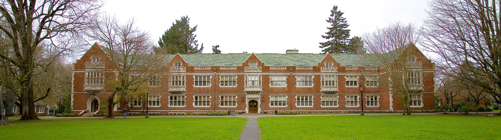

The City of Three Portlands, commonly called Three Portlands, Three Ports (3Ports), or simply Portlands, is an independent city-state and paranormal enclave located within a self-contained pocket universe.
The origins of Three Portlands are unknown, and the subject of much speculation, but it is generally assumed that the city did not exist prior to the incorporation of Portland, Oregon in 1851. Parahistorian L. Rowe has theorized that Three Portlands may have been formed by the global thaumic backlash from the 6th Occult War, which would place the city's origin in the 1880s.
The earliest reliable record of Three Portlands is an internal memorandum of the British Occult Service dating from 1899, documenting the activities of various minor occult cabals in the south of England and the adjacent multiverse; this memo indicates that Three Portlands had been lightly populated for at least a decade at that point, which closely matches Rowe's timeline.
Geography
City
The pocket universe containing Three Portlands is a finite 3-space bounded by two elliptic paraboloids. Local gravity is oriented downwards along the central axis, allowing for a distinction between the upper and lower paraboloids. The lower paraboloid is a solid surface which constitutes the ground; the constant gravitational vector and the curvature of the ground surface combine to produce a gentle but noticeable slope.
Three Portlands occupies a roughly circular area upon this surface, centered around the lowest point of the ground paraboloid. While the curvature of the ground is extremely shallow, it still makes it possible to see any point of the city from any other point, resulting in an inverted horizon that can be extremely disorienting for newcomers.
Education
In terms of secondary education, Three Portlands hosts a number of occult and non-occult colleges. Three Portlands Community College is the largest of these, with enrollment open to all Portlands residents.
ICSUT Portlands

Hall
The city's occult colleges are dominated by ICSUT Portlands, the Three Portlands campus and branch of the International Center for the Study of Unified Thaumatology. Established in 1941 as one of the concessions of the Howard-Grant Agreement, ICSUT Portlands initially housed the administrative headquarters of ICSUT, which were relocated from London during the 7th Occult War.
Since the conclusion of the occult conflict, ICSUT Portlands has grown to become a major technical and research university in its own right, with the highest levels of enrollment of any ICSUT campus. Offering extended degree programs focusing on advanced occult studies, ICSUT Portlands attracts students from across the globe.
Deer College
Library
The other major occult college in Three Portlands is the local Deer College. Founded in 1948 and anchored to the Shadow of Reed College, Deer is often seen as the liberal arts counterpart to ICSUT Portlands, and the two schools have a well-developed rivalry.
Deer's thaumatology curriculum is much less technically inclined, and instead focuses on combining mundane and occult studies. The college's anart program is generally well regarded, and is considered one of the institution's cornerstones. While it lacks the lucrative GOC research partnerships of its rival ICSUT, Deer benefits from several generous endowments, including one from Anderson Robotics, which it uses to fund scholarships for non-human students.